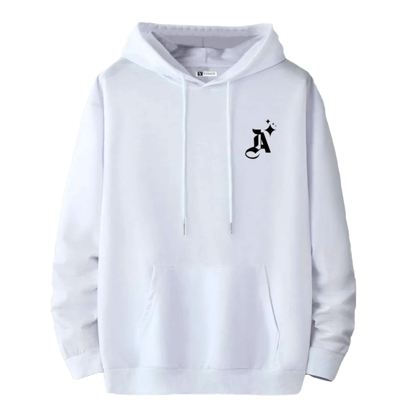

WhatsApp
Polera Hombre Yansus blanco
S/90.00
Polera de algodón orgánico y poliéster reciclado, suave y transpirable. Diseño cómodo con costuras reforzadas para mayor durabilidad. Tejido de alta calidad que mantiene su forma y color tras múltiples lavados. Ideal para un estilo casual y versátil en cualquier ocasión.